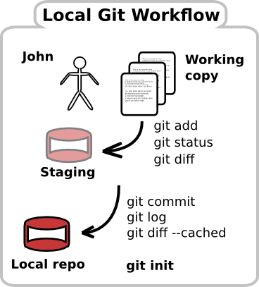

Contents
Git local workflow visualised Git and Github workflow visualised Reference
- 1. Setting up Git & Github
- 2. Creating Git Projects
- 3. Local Git Workflow
- 4. Branching & Merging - why do this
- 5. Collaborating with other developers using Git and Github
- 6. Troubleshooting]
- 7. Resources
This tutorial will give you a practical guide to using the Git version control tool to managing changes to source code and configuration files in projects. The tutorial also covers collaborating on projects using Github public repositories. You can either read an overview of Git
Setting up Git & Github
Creating Git Projects
Local Git Workflow
- Checking the status - what has changed — git status, git diff
- Staging changes - basic add, git add -p, unstaging untracked files, unstaging tracked files, git diff —cached
- Committing a new version
- Git log
- Chapter 7: The local git workflow
Branching & Merging - why do this
- try out code and modifications to design, different algorithms
- easily discard changes that are not needed - or leave them in a branch so they are not affecting / poluting the main codebase
Collaborating with other developers using Git and Github
- Chapter 10: Collaborating with Github
- Practices to avoid when using shared repos like Github
- rebasing, forgetting to push changes (especially for sub modules)
Troubleshooting]
- what to do if you loose your head
- if you really have to change a commit
- unstage changes
Resources
- Git submodules
Git local workflow visualised
You can quickly get versioning your code with Git, all on your own computer. You do not need to set up a server.

Git and Github workflow visualised
To give you a big picture view of how you use Git and Github, here is a visualisation of the workflow for both. The details of this workflow are ocvered in the workshop from Chapter 10: Collaborating with Github onwards.

Reference
- Git essential commands for the most common commands for using Git
- Git Visual cheat sheet
- StarLogs.net demo from my blog
- Github repository for this workshop - pull requests welcome :)
{kind=link}
Last update: Tue 28 Oct 2014 10:10:44 GMT